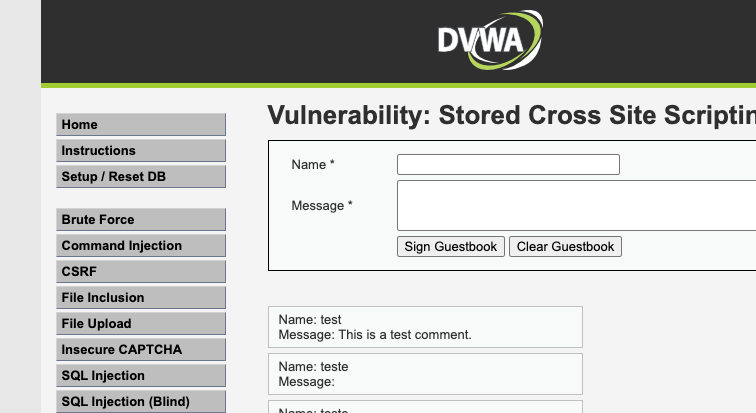

Ferramenta: Scanner de Vulnerabilidades Web + Análise Estática
Ferramenta própria em Python composta por três módulos independentes: um scanner de SQL Injection, um scanner de XSS (refletido e armazenado) e um analisador de código estático que combina Bandit, Semgrep e regras próprias. Os dois primeiros testam o DVWA (Damn Vulnerable Web Application) em ambiente controlado via Docker; o terceiro analisa um código-fonte de exemplo com falhas propositais.
SQL Injection: login automatizado via requests, envio de payloads classificados
(baseados em erro, booleanos e baseados em tempo) e comparação de respostas contra um baseline.
XSS: automação via Selenium, confirmando execução real de JavaScript no navegador (não apenas
reflexo no HTML) e persistência para o caso armazenado. Análise estática: execução do Bandit e
do Semgrep sobre o código-alvo, mais três regras próprias (segredo hardcoded, comando de shell
concatenado, uso de eval/exec), com mesclagem dos achados por arquivo e linha.
| Tipo | Payload | Evidência | Severidade |
|---|---|---|---|
| SQL Injection — baseado em erro/union | ' OR '1'='1 |
Baseline retornou 1 linha(s); payload retornou 5 linha(s) | alta |
| SQL Injection — booleano | 1' AND '1'='1 / 1' AND '1'='2 |
Condição verdadeira retornou dado; condição falsa retornou vazio — resposta muda com a lógica SQL injetada | alta |
| SQL Injection — baseado em tempo | 1' OR SLEEP(3)-- - |
Baseline respondeu em 0.01s; payload com SLEEP(3) respondeu em 12.03s | alta |
| Tipo | Payload | Evidência | Severidade |
|---|---|---|---|
| XSS Refletido | |
window.__xss_hit foi definida como true após a requisição — o script foi executado de verdade pelo navegador, não só refletido como texto | alta |
| XSS Armazenado | |
A variável continuou true após recarregar a página do zero, sem reenviar o formulário — confirma persistência (diferencia de refletido)  |
critica |
| Arquivo:Linha | Ferramentas | Mensagem | Severidade |
|---|---|---|---|
| exemplo_vulneravel/app.py:2 | bandit | Consider possible security implications associated with pickle module. | baixa |
| exemplo_vulneravel/app.py:7 | bandit, regra_propria | Possible hardcoded password: 'SenhaSuperSecreta123' | alta |
| exemplo_vulneravel/app.py:12 | bandit | Possible SQL injection vector through string-based query construction. | media |
| exemplo_vulneravel/app.py:20 | bandit, semgrep, regra_propria | Use of possibly insecure function - consider using safer ast.literal_eval. | alta |
| exemplo_vulneravel/app.py:26 | bandit, semgrep | Pickle and modules that wrap it can be unsafe when used to deserialize untrusted data, possible security issue. | media |
| exemplo_vulneravel/app.py:32 | bandit, regra_propria | Starting a process with a shell, possible injection detected, security issue. | alta |
| exemplo_vulneravel/app.py:14 | semgrep | Avoiding SQL string concatenation: untrusted input concatenated with raw SQL query can result in SQL Injection. In order to execute raw query safely, prepared statement should be used. SQLAlchemy provides TextualSQL to easily used prepared statement with named parameters. For complex SQL composition, use SQL Expression Language or Schema Definition Language. In most cases, SQLAlchemy ORM will be a better option. | alta |
| exemplo_vulneravel/app.py:6 | regra_propria | Possível segredo (chave/senha/token) codificado diretamente no arquivo | alta |
| exemplo_vulneravel/app.py:19 | regra_propria | Uso de eval()/exec() — pode executar código arbitrário se a entrada vier do usuário | alta |
SQL Injection permite ler, alterar ou apagar dados do banco sem autorização, incluindo contornar autenticação. XSS permite executar código no navegador de outras vítimas — o armazenado é mais grave por não depender de a vítima clicar em nada. As falhas de código (segredos expostos, eval/exec, deserialização insegura) permitem, respectivamente, acesso indevido a serviços externos, execução de código arbitrário a partir de entrada do usuário e execução de código via objetos manipulados.
ast.literal_eval quando possível.pickle para dados não confiáveis; usar JSON.A ferramenta identificou com sucesso 14 achados distribuídos entre os três tipos de falha exigidos, com evidências reproduzíveis (requisições, comparações de resposta e screenshots) e lógica de detecção própria em cada módulo, reduzindo a dependência de ferramentas prontas e de falsos positivos.